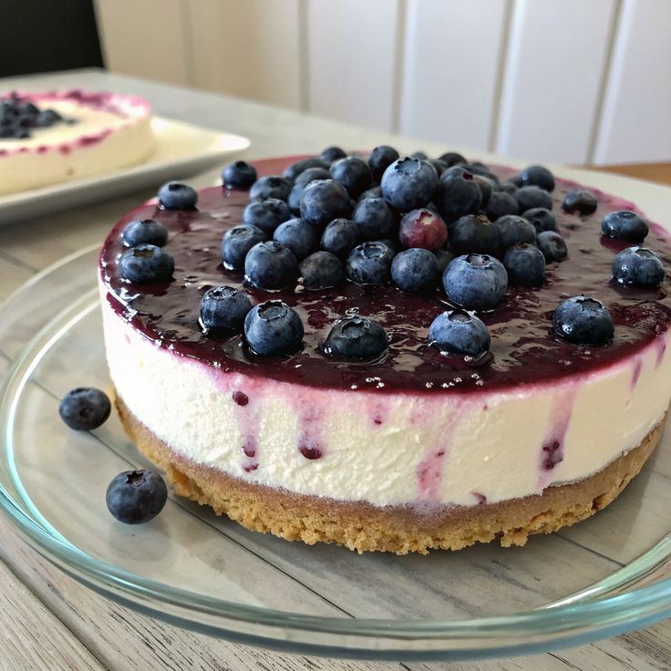
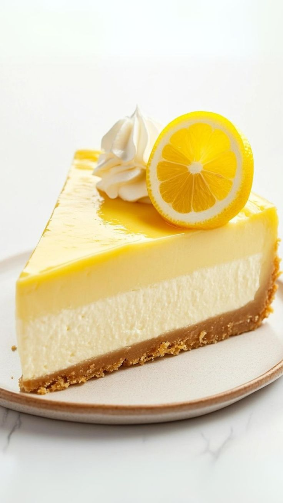

Bienvenidos al Sabor Cheesekiko
En Cheesecake Paradise somos apasionados por la repostería artesanal. Llevamos años horneando los cheesecakes más cremosos para los amantes del dulce. Es un plato muy reconocido en la cocina suramericana, aunque es mucho más famoso en la cultura norteamericana, pero en general son muchos los que se atreven a probar una rica torta de queso. Su origen se remonta a la Antigua Grecia, específicamente a la isla de Samos. Este tipo de alimento se consideraba algo más que una rica receta, era una fuente de energía para los primeros atletas olímpicos. Aunque la preparación era bastante sencilla; se calentaba el queso triturado en una cacerola de cobre con miel y harina para posteriormente dejarlo enfriar y servir; ya era un platillo favorito en la antigüedad. Los romanos sólo usaban la receta en ocasiones especiales, y aunque esta delicia fue recorriendo Europa, a medida que Roma se expandía y luego sucumbía, no fue sino hasta el siglo XVIII cuando pasó a ser lo que conocemos hoy en día.
Nuestra Misión
Endulzar la vida de nuestros clientes con postres de alta calidad, usando ingredientes frescos y recetas que enamoran en cada bocado. Ser reconocida como una pastelería gourmet por la calidad, excelencia y variedad de sus productos. Ser líder en el negocio de panadería y repostería en la ciudad, ofreciendo una experiencia única y personalizada. Ser reconocida a nivel nacional como una repostería pionera en la creación de productos deliciosos y sostenibles. Estas aspiraciones deben ser comunicadas y vividas por todos en la pastelería, desde la selección de ingredientes hasta la atención al cliente, asegurando que cada paso esté alineado con el propósito y los sueños a largo plazo del negocio.
Nuestra Meta
Ser la repostería favorita de la ciudad para el 2460, llevando nuestros cheesecakes artesanales a cada rincón de la región. En el delicioso mundo de la pastelería, la pasión por crear obras maestras comestibles es fundamental. Sin embargo, para que un negocio pastelero florezca y perdure, no basta solo con talento culinario. Es crucial tener una dirección clara, un mapa que guíe cada paso, desde la selección de los ingredientes más finos hasta la experiencia del cliente en tu tienda. Este mapa se construye definiendo y comprendiendo la diferencia entre metas y objetivos, dos conceptos esenciales para la planificación y el crecimiento.s
Nuestros Sabores Especiales

1. Blue Berry
Frutos del bosque y totalmente recomendado.

2. Fresas
Sin duda el postre del hogar.

3. Limón
Un sabor a limón ácido más dulce que un abrazo.